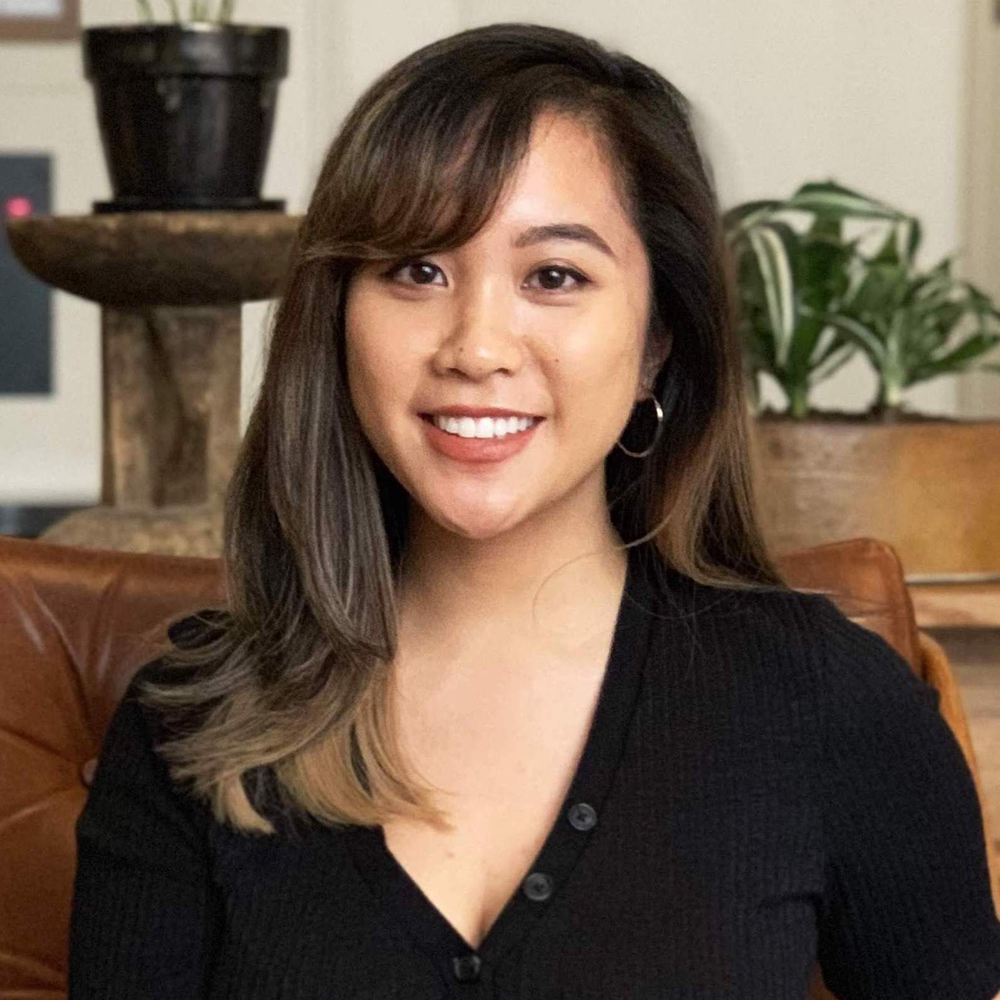

<!DOCTYPE HTML>
<title>Diana Kris Navarro</title>
<head>
	<link rel="stylesheet" type="text/css" href="style.css" />
	<link rel="icon" href="heart.png">
	<meta name="viewport" content="width=device-width, initial-scale=1.0">
</head>
	<header class="intro">
		</img>
		<h2 class="intro__tagline">
			Hello! <span class="name">I'm Diana Kris Navarro</span> 👩🏻‍💻  <br>A 23y/o NYC based Filipina engineer and activist. I was part of the <a href="https://www.huffingtonpost.com/2012/10/23/girls-who-code_n_2005659.html" target="_blank">first class of Girls Who Code</a> (I'm on the far left) and since then I've worked at Gilt Groupe, Qualcomm, Adobe & I currently code at Tumblr.
		</h2>
		<h3 class="intro__contact">
			♥️ contact me 👉🏼
			<a href="resume.pdf" target="_blank">resume</a>
			<a href="https://www.instagram.com/dianakris/" target="_blank">instagram</a>
			<a href="https://www.twitter.com/_dianakris/" target="_blank">twitter</a>
			<a href="https://www.github.com/navdiana" target="_blank">github</a>
			<a href="https://www.linkedin.com/in/dianakrisnavarro/" target="_blank">linkedin</a>
		</h3>
		<h3 class="intro__contact">
		<h3>💖🌟 Highlights: </h3>
			<ul>
				<li>I recently accepted the Webby Award for working with Girls Who Code's #Sisterhood campaign! <a href="https://www.youtube.com/watch?v=mIT2ctpVbig" target="_blank"> Video here</a> ❤️
                </li>
				<li>I was flown out to mentor the NYU Abu Dhabi Hackathon for Social Good in the Arab World. <a href="http://sites.nyuad.nyu.edu/hackathon/" target="_blank"> My team won 2nd place!</a>
                </li>
                <li>I got to rep Girls Who Code at Governor Andrew Cuomo’s Women’s Justice Agenda. <a href="https://www.instagram.com/p/BsWV5zhFRMA/" target="_blank"> Hillary Clinton made some time for us :) </a>
                </li>
				<li>I was interviewed for a <a href="https://www.forbes.com/sites/ciocentral/2017/10/31/girls-still-coding-five-years-later/#6bd84f8b39da" target="_blank">Forbes article.</a> The CEO of AppNexus interviews me for a piece on women in technology.
  				</li>
  				<li>I went to LA to be featured in a <a href="https://www.youtube.com/watch?v=NiOIeaISGEU" target="_blank">music video</a> for
  					<a href="https://girlswhocode.com/sisterhood/" target="_blank">a social good campaign for International Day of the Girl. (You can see me at 2:06 and 2:29)</a> We were featured on Cartoon Network,
  					<a href="https://twitter.com/SRuhle/status/1049762108571873280" target="_blank">MSNBC, </a>
  					<a href="https://www.adweek.com/brand-marketing/girls-who-code-drop-a-new-digital-visual-album-to-celebrate-modern-sisterhood/" target="_blank">Adweek</a>
  					 and more! We also got a shout out from
					<a href="https://twitter.com/fatbellybella/status/1049457295871143936" target="_blank">Erykah Badu, </a>
					<a href="https://twitter.com/ChelseaClinton/status/1049752531319050240" target="_blank"> and Chelsea Clinton!</a> 😍
				</li>
				<li>I told <a href="https://www.facebook.com/womenofsiliconvalley/posts/1980035825372706?__xts__[0]=68.ARCZ8aZGhScaG0ueZ9pS3KzZDrblirkBZ8568Lfh-TusDzg1E8Rx5uVuy3EHIxBj1elsJcURpS06q9DrcqG5VYNQnaRU07Htb9NRmYVIKRADsWnCq01MSsHnxaTyc3SWSPHu2h0fw68gida86jFVLXgZuBdGYVroURDKbbU1hni94PMJ2D6alsrrTStw6JFUjA-E1Alk_vnIAGWgvGM7zqEwzxru0Q&__tn__=C-R" target="_blank">my life story to Women of Silicon Valley</a> for Filipino American History month. 🇵🇭 I was completely overwhelmed by the response 😭
  				</li>
  				<li>I was part of the 3% selected to be a <a href="https://www.linkedin.com/feed/update/activity:6437368658447650816/" target="_blank" >Square Code Camp student</a> 🎀
  				</li>
  				<li>I was a <a href="https://hackny.org/2017/06/announcing-the-class-of-2017-hackny-fellows/" target="_blank">hackNY fellow in 2017</a>
  				<li>I organized my first hackathon for hackNY! Where I got to organize my first <a href="https://www.instagram.com/p/BoVPlEWhZye/?taken-by=hacknewyork" target="_blank">Filipinos in Tech meetup.</a> (I'm the one recording ha)
  				</li>
  				<li><a href="https://theblog.adobe.com/a-summer-of-coding-a-future-of-success/" target="_blank">Adobe featured me on their blog</a> for giving talks and mentoring their Girls Who Code classes 💪🏼❤️
  				</li>

  			</ul>
		</h3>
<br>
<br>
<br>


	</header>

</html>

